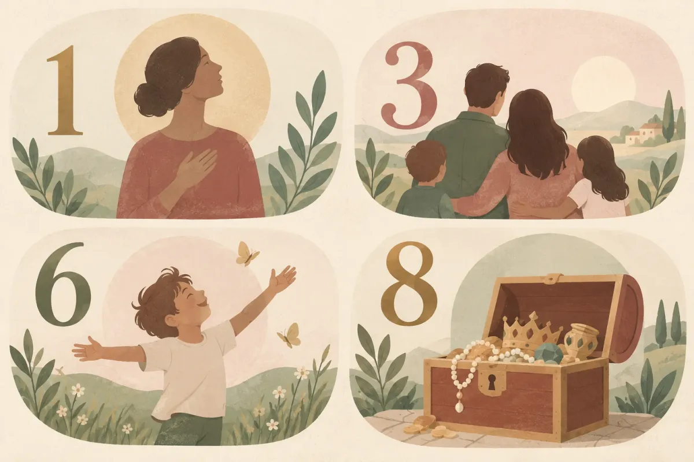
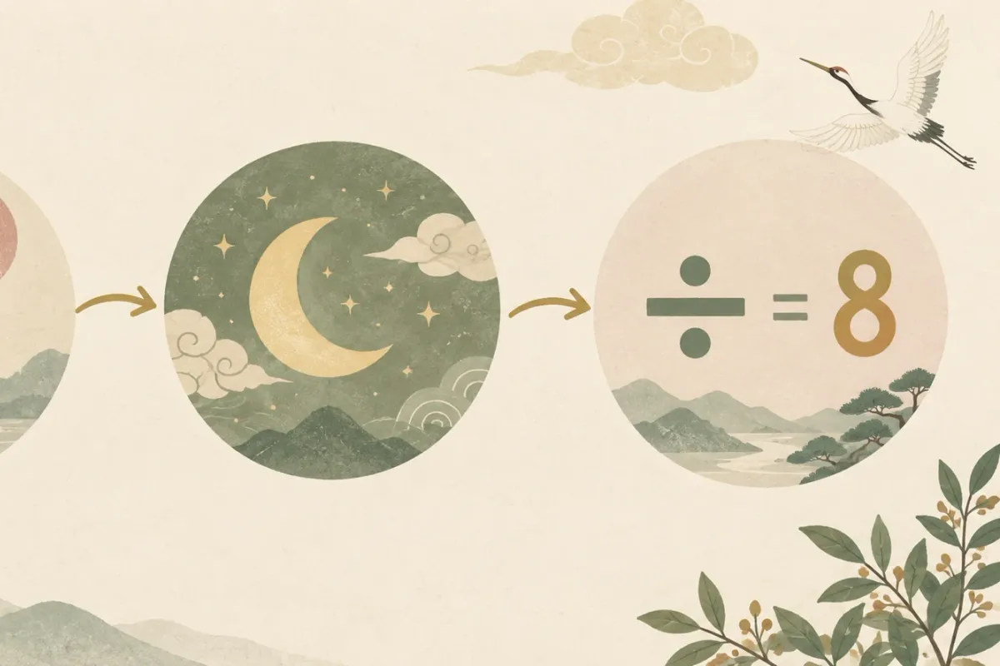
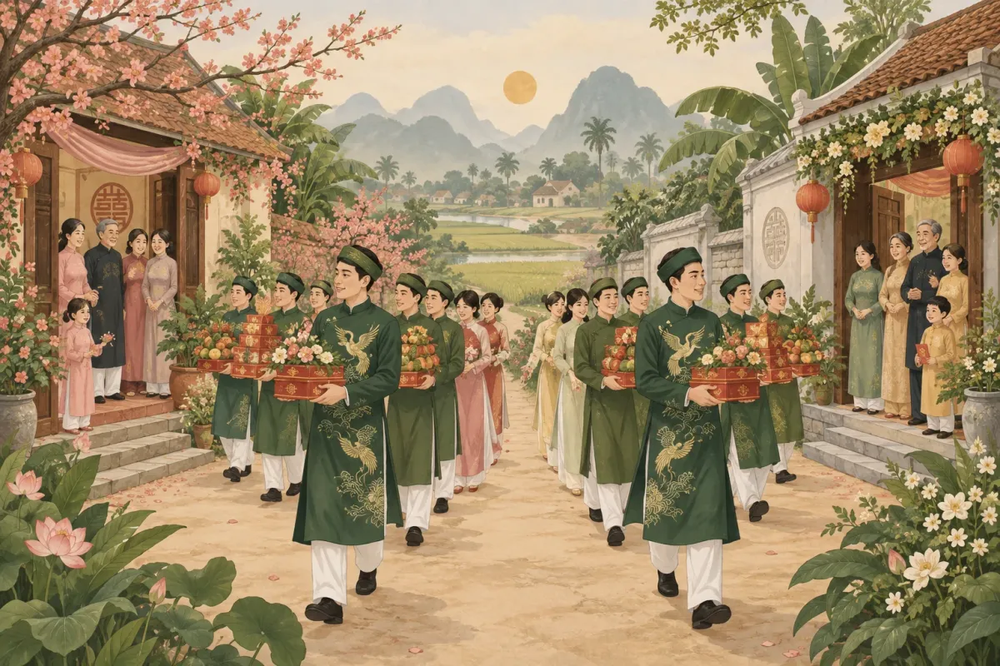

Kim lâu là tuổi xấu trong phong tục cưới hỏi và làm nhà, tính bằng tuổi mụ chia cho 9 — nếu dư 1, 3, 6 hoặc 8 thì gọi là phạm kim lâu. Có 4 loại kim lâu (Thân, Thê, Tử, Lục Súc) tương ứng với 4 ảnh hưởng khác nhau, trong đó cưới hỏi thường xét kim lâu của cô dâu. Người phạm kim lâu vẫn có thể cưới bằng cách chọn ngày tốt, cưới 2 lần trong ngày hoặc đợi thời điểm khác — không nhất thiết phải đợi cả năm. Bài viết dưới đây giải thích cách tính, bảng tra theo năm sinh và 4 cách hoá giải cụ thể.
- Công cụ tra kim lâu miễn phí — nhập năm sinh, xem kết quả ngay
- Tháng đại lợi là gì — cách chọn tháng cưới tốt
- Mẫu thiệp cưới online đẹp — hơn 50 mẫu sang trọng
Kim lâu là gì? Nguồn gốc và ý nghĩa trong phong tục Việt
Kim lâu là khái niệm trong phong thuỷ dân gian Việt Nam, dùng để xác định những năm không hợp để cưới hỏi hoặc làm nhà. Tên đầy đủ là "Cửu Trùng Kim Lâu", xuất phát từ thuyết ngũ hành và âm lịch.
"Cửu Trùng Kim Lâu" nghĩa là gì?
Tên Hán Việt gồm 4 từ: Cửu (9), Trùng (lớp, tầng), Kim (vàng), Lâu (lầu). Ghép lại có nghĩa "lầu vàng 9 tầng" — ẩn dụ cho ngưỡng khó vượt qua. Cách tính dựa trên phép chia 9, nên gọi tắt "cửu trùng". Khái niệm này bắt nguồn từ thuyết âm dương ngũ hành Trung Hoa, được bản địa hoá trong phong tục Việt Nam qua nhiều thế kỷ (theo phong tục cưới hỏi Việt Nam — Thanh Niên, 2024).
Kim lâu ảnh hưởng gì đến cưới hỏi và làm nhà?
Trong dân gian, kim lâu được xem xét ở 2 lĩnh vực chính: cưới hỏi và xây dựng (làm nhà, động thổ). Với cưới hỏi, người ta thường xét tuổi cô dâu — nếu phạm kim lâu thì cho rằng hôn nhân gặp trắc trở. Với làm nhà, xét tuổi gia chủ. Mức độ kiêng kỵ tuỳ vùng miền: miền Bắc thường coi trọng hơn, trong khi một số vùng miền Nam chỉ xét khi thầy phong thuỷ nhắc. Dù vậy, kim lâu vẫn là một trong những yếu tố được hỏi nhiều nhất khi các cặp đôi chọn ngày cưới.
Kim lâu = tuổi xấu tính bằng tuổi mụ ÷ 9. Phạm khi dư 1, 3, 6 hoặc 8. Chủ yếu áp dụng cho cưới hỏi (xét cô dâu) và làm nhà (xét gia chủ).
4 loại kim lâu là gì và ảnh hưởng như thế nào?
Có 4 loại: Kim Lâu Thân (dư 1, ảnh hưởng bản thân), Kim Lâu Thê (dư 3, ảnh hưởng vợ/chồng), Kim Lâu Tử (dư 6, ảnh hưởng con cái), Kim Lâu Lục Súc (dư 8, ảnh hưởng tài sản). Cưới hỏi thường kiêng nhất Kim Lâu Thê và Kim Lâu Tử.

Kim Lâu Thân (dư 1) — ảnh hưởng bản thân
Khi tuổi mụ chia 9 dư 1, gọi là phạm Kim Lâu Thân. Theo quan niệm dân gian, loại này ảnh hưởng đến sức khoẻ và vận may của chính người phạm. Trong cưới hỏi, nhiều gia đình vẫn chấp nhận vì không liên quan trực tiếp đến hôn nhân.
Kim Lâu Thê (dư 3) — ảnh hưởng vợ/chồng
Dư 3 phạm Kim Lâu Thê — loại được kiêng kỵ nhất khi cưới hỏi. Quan niệm cho rằng ảnh hưởng đến mối quan hệ vợ chồng, dễ bất hoà. Đây là lý do phổ biến nhất khiến các cặp đôi cân nhắc đổi năm cưới.
Kim Lâu Tử (dư 6) — ảnh hưởng con cái
Phạm Kim Lâu Tử khi dư 6. Theo dân gian, ảnh hưởng đến đường con cái — khó sinh hoặc con yếu. Cùng với Kim Lâu Thê, đây là loại mà nhiều gia đình đặc biệt e ngại.
Kim Lâu Lục Súc (dư 8) — ảnh hưởng tài sản
Dư 8 phạm Kim Lâu Lục Súc, liên quan đến tài sản và vật nuôi. Mức độ kiêng kỵ nhẹ nhất trong 4 loại. Nhiều cặp đôi phạm loại này vẫn tổ chức cưới bình thường, chỉ chú ý chọn ngày hoàng đạo tốt để bù lại.
Nhớ 4 số dư: 1 (Thân — bản thân), 3 (Thê — vợ chồng), 6 (Tử — con cái), 8 (Lục Súc — tài sản). Các số dư 0, 2, 4, 5, 7 đều không phạm kim lâu.
Cách tính kim lâu theo năm sinh: công thức và ví dụ cụ thể
Lấy tuổi mụ (năm âm lịch tổ chức − năm âm lịch sinh + 1) chia cho 9. Nếu số dư là 1, 3, 6 hoặc 8 thì phạm kim lâu. Ví dụ: nữ sinh 1998, cưới năm 2026 thì tuổi mụ = 2026 − 1998 + 1 = 29; 29 ÷ 9 = 3 dư 2 — không phạm.

Bước 1 — Tính tuổi mụ
Tuổi mụ = Năm tổ chức (âm lịch) − Năm sinh (âm lịch) + 1. Lưu ý dùng năm âm lịch: nếu sinh trước Tết Nguyên đán thì năm sinh âm lịch lùi 1 so với dương lịch. Ví dụ: sinh ngày 20/01/1998 dương lịch, tức vẫn thuộc năm Đinh Sửu 1997 âm lịch.
Bước 2 — Chia 9 và đọc số dư
Lấy tuổi mụ chia cho 9. Xem số dư:
- Dư 1 — Kim Lâu Thân (hại bản thân)
- Dư 3 — Kim Lâu Thê (hại vợ/chồng)
- Dư 6 — Kim Lâu Tử (hại con cái)
- Dư 8 — Kim Lâu Lục Súc (hại tài sản)
- Dư 0, 2, 4, 5, 7 — Không phạm kim lâu
Một số tài liệu cũ hướng dẫn "cộng các chữ số của tuổi mụ" rồi đọc kết quả. Cách này cho kết quả tương đương vì theo lý thuyết số học, tổng chữ số luôn đồng dư với số gốc khi chia 9. Phép chia trực tiếp nhanh và ít nhầm hơn.
Ví dụ cụ thể cho năm sinh phổ biến
| Năm sinh | Năm cưới | Tuổi mụ | Chia 9 | Kết quả |
|---|---|---|---|---|
| Nữ 1996 | 2026 | 31 | 31 ÷ 9 = 3 dư 4 | Không phạm |
| Nữ 1998 | 2026 | 29 | 29 ÷ 9 = 3 dư 2 | Không phạm |
| Nữ 1998 | 2027 | 30 | 30 ÷ 9 = 3 dư 3 | Kim Lâu Thê |
| Nữ 2000 | 2026 | 27 | 27 ÷ 9 = 3 dư 0 | Không phạm |
| Nữ 2000 | 2027 | 28 | 28 ÷ 9 = 3 dư 1 | Kim Lâu Thân |
| Nam 1996 | 2026 | 31 | 31 ÷ 9 = 3 dư 4 | Không phạm |
Bạn sinh năm 1998 và đang chọn năm cưới? Xem thêm bài nam 1998 hợp tuổi nào cưới để kiểm tra cả mệnh, can chi và cung phi.
Bảng tra kim lâu theo năm sinh: cô dâu sinh năm nào phạm năm nào?
Bảng dưới liệt kê các năm sinh phổ biến (1990–2004) và những năm tổ chức cưới (2025–2028) có phạm kim lâu hay không, kèm loại kim lâu tương ứng. Bảng tính sẵn cho cô dâu (theo phong tục xét tuổi cô dâu); chú rể muốn tra thì dùng công cụ.
| Năm sinh cô dâu | Cưới 2025 | Cưới 2026 | Cưới 2027 | Cưới 2028 |
|---|---|---|---|---|
| 1990 | Không phạm | KL Thân | Không phạm | KL Thê |
| 1991 | KL Lục Súc | Không phạm | KL Thân | Không phạm |
| 1992 | Không phạm | KL Lục Súc | Không phạm | KL Thân |
| 1993 | KL Tử | Không phạm | KL Lục Súc | Không phạm |
| 1994 | Không phạm | KL Tử | Không phạm | KL Lục Súc |
| 1995 | Không phạm | Không phạm | KL Tử | Không phạm |
| 1996 | KL Thê | Không phạm | Không phạm | KL Tử |
| 1997 | Không phạm | KL Thê | Không phạm | Không phạm |
| 1998 | KL Thân | Không phạm | KL Thê | Không phạm |
| 1999 | Không phạm | KL Thân | Không phạm | KL Thê |
| 2000 | KL Lục Súc | Không phạm | KL Thân | Không phạm |
| 2001 | Không phạm | KL Lục Súc | Không phạm | KL Thân |
| 2002 | KL Tử | Không phạm | KL Lục Súc | Không phạm |
| 2003 | Không phạm | KL Tử | Không phạm | KL Lục Súc |
| 2004 | Không phạm | Không phạm | KL Tử | Không phạm |
Bảng trên tính theo dương lịch (gần đúng); nếu sinh trước Tết Nguyên đán, năm sinh âm lịch lùi 1 và kết quả có thể lệch. Để chính xác, hãy tra ngày tuổi của bạn tại công cụ xem ngày cưới đẹp — nhập đúng ngày sinh dương lịch, hệ thống tự quy đổi âm lịch.
Tra kim lâu miễn phí — chỉ cần nhập ngày sinh
Nhập ngày sinh cô dâu chú rể — công cụ tự tra kim lâu, hoang ốc, tam tai và lọc ngày cưới đẹp. Miễn phí, không cần đăng ký.
Phạm kim lâu thì có cưới được không?
Có thể cưới. Kim lâu là quan niệm dân gian, không có cơ sở khoa học. Nhiều cặp đôi vẫn cưới hạnh phúc dù phạm kim lâu. Nếu gia đình kiêng kỵ, có 4 cách hoá giải được nhiều người áp dụng (xem mục tiếp theo).
Quan điểm phong thuỷ truyền thống
Trong phong thuỷ dân gian, kim lâu thuộc nhóm "đại kỵ" — cùng hàng với hoang ốc và tam tai. Nhiều thầy phong thuỷ khuyên tránh cưới năm phạm Kim Lâu Thê hoặc Kim Lâu Tử, nhưng chấp nhận Kim Lâu Thân và Lục Súc nếu ngày giờ tốt.
Góc nhìn hiện đại
Không có nghiên cứu khoa học nào chứng minh mối liên hệ giữa kim lâu và hạnh phúc hôn nhân. Nhiều cặp đôi cưới năm phạm kim lâu mà cuộc sống vẫn thuận lợi. Ngược lại, cưới năm "đẹp" cũng không đảm bảo hôn nhân bền vững. Hạnh phúc phụ thuộc vào cách hai người đối xử với nhau, không phải phép chia số học.
Khi nào nên tôn trọng quan niệm gia đình?
Nếu bố mẹ hoặc ông bà hai bên coi trọng kim lâu, việc tranh luận đúng sai ít có ích. Cách tiếp cận thực tế: tìm hiểu kỹ (đọc bài này), sau đó trình bày với gia đình rằng bạn đã xem xét cẩn thận và có phương án hoá giải. Đôi khi sự an tâm của cả gia đình quan trọng hơn việc ai đúng ai sai.
4 cách hoá giải kim lâu trong cưới hỏi: từ đơn giản đến bài bản
4 cách phổ biến: (1) đợi sau Đông Chí để tuổi mụ tăng lên, (2) tổ chức "cưới 2 lần" trong cùng ngày, (3) mượn tuổi người không phạm làm đại diện, (4) chọn ngày hoàng đạo tốt kết hợp xét hoang ốc và tam tai.

Đợi sau Đông Chí
Đông Chí thường rơi vào 21–22 tháng 12 dương lịch. Sau ngày này, tuổi mụ tăng thêm 1 (vì chuyển sang năm âm mới). Nếu tuổi mụ mới không còn phạm kim lâu, bạn có thể tổ chức cưới vào cuối tháng 12 dương lịch hoặc đầu tháng 1 năm sau. Đây là cách đơn giản nhất, phù hợp khi hai bên gia đình linh hoạt về thời gian. Xem thêm về tháng đại lợi để chọn tháng cưới hợp tuổi.
Cưới 2 lần (qua sông 2 lần)
Nhà trai tổ chức đón dâu 2 lượt trong cùng ngày cưới. Lượt 1: chú rể sang nhà gái một mình đón cô dâu về — coi như đã "cưới" xong, kim lâu đã qua. Lượt 2: lễ rước dâu chính thức với đoàn nhà trai, ăn hỏi đầy đủ. Cách này phổ biến ở miền Bắc, gọi là "qua sông 2 lần". Thực tế, hai lượt cách nhau 1–2 tiếng là đủ — không cần 2 ngày riêng.
Mượn tuổi
Nhờ một người thân không phạm kim lâu (thường là anh/chị/em ruột cô dâu) làm đại diện đứng ra nhận lễ. Điều kiện: người mượn tuổi phải cùng giới tính, không phạm kim lâu, không phạm tam tai, và được hai bên gia đình đồng ý. Cách này ít phổ biến hơn hai cách trên vì phức tạp về mặt nghi lễ.
Chọn ngày hoàng đạo tốt kết hợp xét hoang ốc, tam tai
Nếu vẫn cưới năm phạm kim lâu, hãy chọn ngày thật tốt: ngày hoàng đạo, trực Thành/Khai/Định, tránh Tam Nương và Nguyệt Kỵ, đồng thời xem thêm hoang ốc và tam tai là gì để tránh trùng nhiều yếu tố xấu. Bạn có thể dùng bảng tra kim lâu theo năm sinh trên công cụ xem ngày cưới đẹp để lọc ngày tự động — hệ thống xét cả kim lâu, hoang ốc và tam tai cùng lúc.
Không nên tự ý kết hợp nhiều cách hoá giải (vừa mượn tuổi vừa cưới 2 lần) — chọn 1 cách và thực hiện đúng theo phong tục địa phương. Hỏi ý kiến thầy phong thuỷ hoặc người lớn trong gia đình trước khi quyết định.
Kim lâu khác hoang ốc và tam tai thế nào?
Kim lâu xét từng năm (tuổi mụ ÷ 9), hoang ốc xét từng năm (6 cung tuần hoàn), tam tai là chu kỳ 3 năm liên tiếp theo nhóm con giáp. Khi chọn ngày cưới cần xét cả 3, không chỉ kim lâu.
| Yếu tố | Cách tính | Chu kỳ | Mức độ kiêng | Hoá giải |
|---|---|---|---|---|
| Kim lâu | Tuổi mụ ÷ 9, dư 1/3/6/8 | Lặp mỗi 9 năm | Cao (đặc biệt Thê, Tử) | Đợi Đông Chí, cưới 2 lần, mượn tuổi |
| Hoang ốc | 6 cung tuần hoàn theo tuổi | Lặp mỗi 6 năm | Trung bình | Chọn ngày tốt bù |
| Tam tai | 3 năm liên tiếp theo nhóm giáp | 12 năm (3 năm xấu) | Cao | Chọn tháng/ngày hợp, làm lễ giải hạn |
Điểm chung: cả 3 đều là quan niệm dân gian, không có bằng chứng khoa học, nhưng được nhiều gia đình Việt coi trọng. Điểm khác biệt lớn nhất: kim lâu và hoang ốc thay đổi mỗi năm, còn tam tai kéo dài 3 năm liên tiếp nên khó tránh hơn. Để kiểm tra cả 3 yếu tố cùng lúc, dùng công cụ xem ngày cưới đẹp — nhập năm sinh là xem được hết.
Trước khi chốt ngày, bạn có thể tham khảo thêm:
- Xem ngày cưới đẹp — tra kim lâu, hoang ốc, tam tai
- Bảng giá thiệp cưới online
- Câu hỏi thường gặp về thiệp cưới online
Câu hỏi thường gặp về kim lâu
Kim lâu là gì?
Kim lâu là tuổi xấu trong phong tục dân gian, tính bằng tuổi mụ chia 9. Nếu dư 1, 3, 6 hoặc 8 thì phạm kim lâu, thường kiêng cưới hỏi và làm nhà.
Cách tính kim lâu như thế nào?
Lấy tuổi mụ (năm âm lịch tổ chức trừ năm âm lịch sinh cộng 1), chia cho 9. Số dư 1 là Kim Lâu Thân, 3 là Kim Lâu Thê, 6 là Kim Lâu Tử, 8 là Kim Lâu Lục Súc.
Phạm kim lâu có cưới được không?
Có. Kim lâu là quan niệm dân gian, không có minh chứng khoa học. Nhiều cặp đôi vẫn cưới hạnh phúc. Nếu kiêng kỵ, có thể hoá giải bằng cách cưới 2 lần, đợi sau Đông Chí hoặc mượn tuổi.
Kim lâu tính theo tuổi ai, cô dâu hay chú rể?
Theo phong tục truyền thống, xét theo tuổi cô dâu. Một số vùng xét cả hai, nhưng phổ biến nhất là xét cô dâu.
Kim lâu chỉ xấu cho cưới hỏi hay còn việc khác?
Kim lâu còn ảnh hưởng đến làm nhà, động thổ, khai trương theo quan niệm dân gian. Tuy nhiên mức độ kiêng kỵ cưới hỏi thường được coi trọng nhất.
"Cưới 2 lần" để hoá giải kim lâu là làm thế nào?
Nhà trai tổ chức đón dâu 2 lượt trong cùng ngày cưới. Lượt 1 chú rể sang một mình đón cô dâu về, lượt 2 là lễ rước dâu chính thức. Gọi là "qua sông 2 lần".
Kim lâu khác hoang ốc và tam tai thế nào?
Kim lâu xét tuổi mụ chia 9, hoang ốc xét 6 cung tuần hoàn, tam tai là 3 năm liên tiếp theo nhóm con giáp. Khi chọn ngày cưới nên xét cả 3.
Có công cụ nào tính kim lâu trực tuyến không?
Có. Templexa cung cấp công cụ xem ngày cưới đẹp miễn phí tại templexa.vn/xem-ngay-cuoi-dep, tự động tra kim lâu, hoang ốc, tam tai theo năm sinh và lọc ngày hoàng đạo hợp cưới hỏi.
Lời cuối
Kim lâu là một phần của phong tục cưới hỏi Việt Nam — không phải quy tắc bắt buộc, nhưng cũng không nên bỏ qua nếu gia đình hai bên coi trọng. Hiểu cách tính, biết bảng tra, và nắm sẵn phương án hoá giải sẽ giúp bạn tự tin trả lời khi người lớn hỏi "có phạm kim lâu không". Chúc hai bạn chọn được ngày lành tháng tốt và có một đám cưới trọn vẹn.
Templexa
Đội ngũ làm thiệp cưới online tại Templexa — mỗi tuần trò chuyện với hàng chục cặp đôi sắp cưới, và viết lại những gì đã học được trong Cẩm nang cưới hỏi.